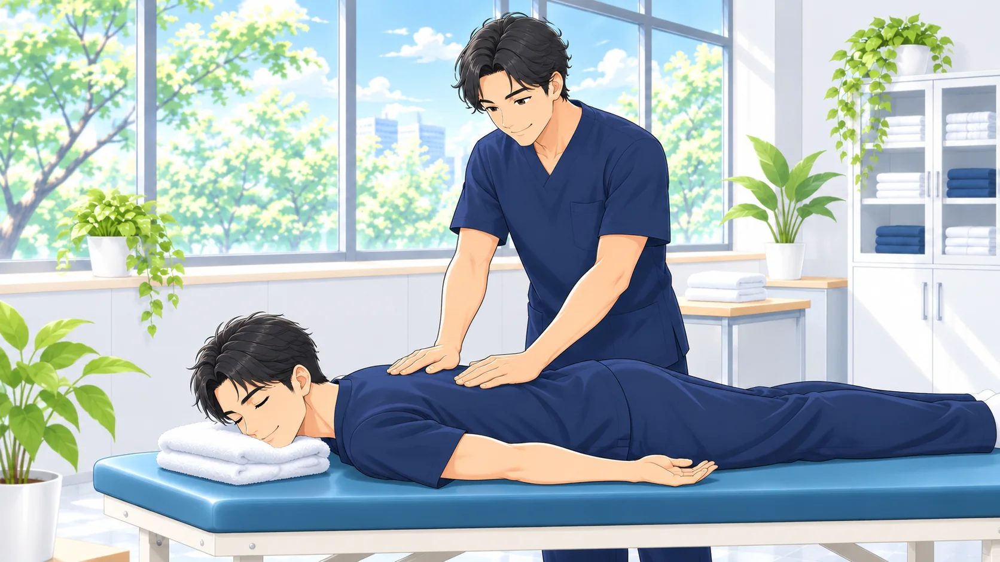
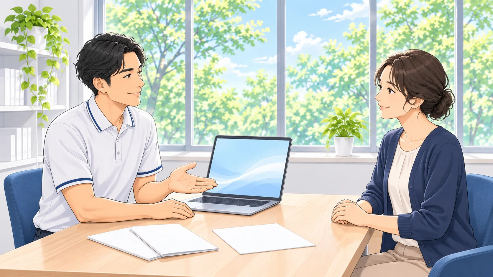
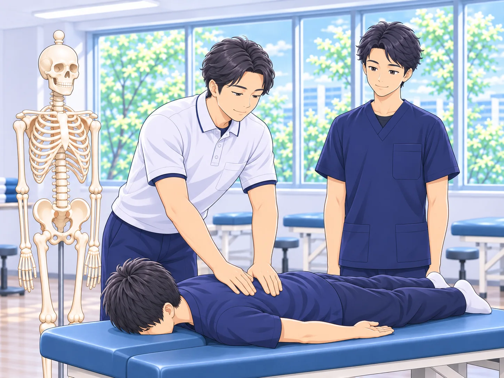

01初級 / ウェルネス整体を学ぶ
プロ整体セラピストコース
全身を整える整体の基礎に、接客力と現場対応力を。整体セラピストとしての土台を身につけます。
もっと詳しく詳しく見る入学案内

目標に合わせたコース選び

01初級 / ウェルネス整体を学ぶ
全身を整える整体の基礎に、接客力と現場対応力を。整体セラピストとしての土台を身につけます。
もっと詳しく詳しく見る 02
02初級＋中級 / 整体＋アクチベータを学ぶ
整体を土台に、専門性の高いカイロプラクティック技術を習得。施術の幅を広げます。
もっと詳しく詳しく見る
03初級＋中級＋上級 / 総合技術を学び、独立・開業へ
整体・カイロプラクティックの総合技術と、検査・施術計画・クライアント対応力を学びます。
もっと詳しく詳しく見る午前・昼間・夜間から受講時間を選べます。座学はオンライン学習で学び、実技はスクーリングで繰り返し身につけます。
具体的な時間割や受講の開始時期、お申し込みの詳細については、学院へお問い合わせください。
よくあるご質問
はい。基礎知識や基本手技から段階的に学び、現場で活かせる技術を身につけるカリキュラムです。
午前・昼間・夜間から受講時間を選択できるため、お仕事の予定に合わせて学べます。18時からの夜間授業も用意しています。
最短卒業期間の目安は、初級が約4か月、初級＋中級が約6か月、初級＋中級＋上級が約9か月です。到達度は受講状況や個人差により異なります。
系列・提携治療院への紹介や面談準備など、一人ひとりの希望に合わせて就職を支援しています。卒業後の転職も相談できます。
物件探し、資金計画、内装、集客、スタッフ育成など、グループの経験とノウハウを活かしたサポートを行っています。

新しい一歩を、ここから。
学び方も、仕事のことも、これからの自分のことも。
まずは気軽に、あなたの目指す未来を聞かせてください。